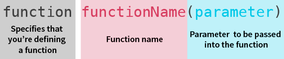

The purpose of this page is for me to experiment with code.
I wasn't planning for anyone to see this, but what's the worst that can happen?
32 * 63 =
. The important thing is to write
document.writeand then your calculation in
( ). David S claim's this would fail a code review. He won't be reviewing my work.
It's easy to count the length of a string. For example "I'm coding like a champ" is
characters long. This is the code:
document.write( "I'm coding like a champ" .length)
You can also do clever things with Boolean expressions. For example
document.write( 23 > 10 )will return
It's possible to count the length of a string and compare it to other numbers or strings. For example
document.write( "I'm coding like a champ" .length > 10);will return "
"
Variables are a way of saving values (i.e. strings, numbers and booleans) A variable stores a value and gives it a specific case sensitive name.
Example:
var myName = "Andrew Denty";creates a variable named "myName" which stores the string "Andrew Denty".
A function takes an input, does something with it and then returns an output. Functions are proceeded by
( )which means call the function.
Example:
var myName = "Andrew Denty"; document.write(myName)creates a variable named "myName" and the function "document.write" displays "
"
It is also possible to call multiple variables with one function. Simply seperate the variables with commas. For example
var FirstName = "Andrew"; var LastName = "James"; document.write(FirstName, " ",LastName);displays "
". Notice the use of the string in the middle to add a space between thew first and last name.
Arrays store lists of data. They are surrounded by
[].For example
var fullName = ["Andrew", "James", "Denty"]That's a really simple array which will appear as
when I write
document.write (FullName).
In order to make my name format properly I need to add the
.joinfunction when I call the array.
document.write (FullName.join(' '));results in
. Notice the use of
(' ')to insert spaces between each variable in the array.
It is possible to count the length of arrays. Different syntax is required to count different things:
document.write (FullName.length)
document.write (("" + FullName).length);
document.write (("" + FullName.join('')) .length);
If/else statements are used to decide whether a piece of code should be run and are generally structured like this:
if(boolean) { variableName = "something"; } else { variableName = "somethingElse"; }
Clicking here will do something magical.
The code is really simple. It's just a anchor tag which contains some JavaScript:
<a href="javascript:confirm('Yep, this confirm function is truely magical');" >Clicking here will do something magical.</a>
The game introduces the prompt function and sets variables based on user input. These variables are then passed into if/else statements.This game is an example on Code Academy.
A function takes in inputs, does something with them, and produces an output. You can assign functions to variables.

var divideByThree = function (number)
{
var val = number / 3;
console.log(val);
};
This example creates a variable named "divideByThree", specifies that it is a function and "number" is the parameter to be specified when this function is used. Then squiggly brackets are used to speficy which instructions are part of the function. In this case we create the variable "val" and speficy that it is "number" (the input of the function) divided by 3. The final step of the function is to print "val".
Basically, in order to write good code, don't repeat yourself. Use functions to avoid repeating yourself whenever possible...
Here's an example. Luckily I don't have to drive to work, but imagine I did, I'd need to fill my car with Petrol, and each time I'd need to fill it with a varying amount. To avoid working out how much it costs to fill my car on a regular basis I can just write a function which will calculate this for me. We'll ignore the obvious issue that the price of petrol fluctuates, and that the petrol pump displays the cost as I pump!
The return keyword gives the programmer back the value that comes out of the function. So the function runs, and when the return keyword is used, the function will immediately stop running and return the value.
what is it? t gives you the remainder when one number is divided by another. eg. 13 % 3 is 1